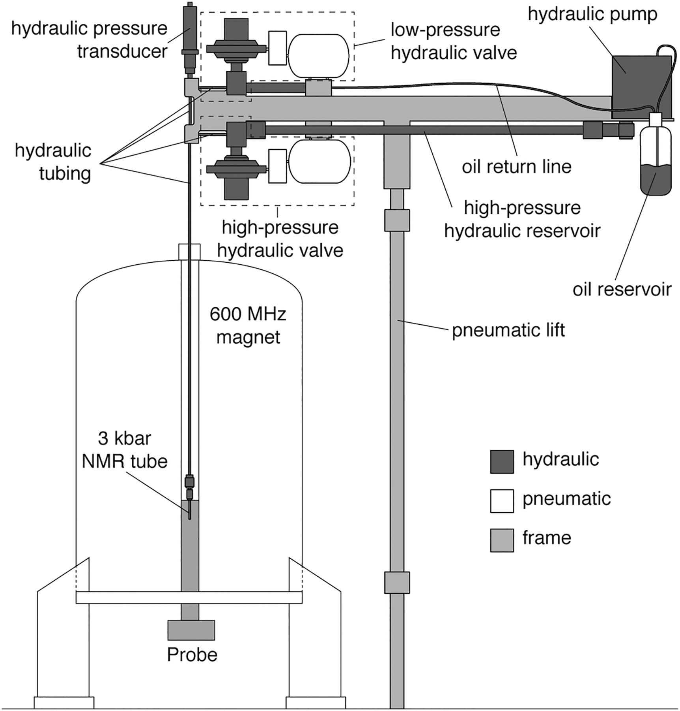

Introduction and Overview¶
{kind=link}
The icarus NMR pressure-jump instrument is a newly developed instrument at Laboratory of Chemical Physics, NIDDK, NIH. The Figure 1 shows the diagram if the first generation apparatus. The apparatus controlling the hydrostatic pressure consists of a high-pressure reservoir of hydraulic fluid, either mineral oil or mineral spirit, that is connected through a spectrometer-controlled valve and stainless-steel tubing to the NMR sample cell (Figure 1). In the open state of the high-pressure valve, the aqueous protein solution inside the NMR sample cell rapidly equilibrates its pressure with the oil reservoir, which itself is pressurized by a pneumatically driven pump. (more details at www.pnas.org/cgi/doi/10.1073/pnas.1803642115)
The high-pressure and low-pressure hydraulic valves can be open and closed by an electrical TTL signal (Active Low) originating at NMR console. The system is equipment with multiple low pressure sensors and high-pressure hydraulic transducer(shown in the Figure 1). The digital TTL lines together with analog sensor readings are connected to the data acquisition unit for monitoring and emergency control.
The icarus NMR pressure jump control software is designed to be minimally invasive and provide real-time constant monitoring. The monitoring is done with a fast data acquisition unit from DATAQ DI-4108, which collects data from 8 analog and 7 digital channels.

The Data Handler process has two main responsibilities:
reading data from the DI-4108 built-in buffer and never let the buffer to overflow. The read data is put into FIFO queue of variable length.
provide software path to change the digital state on the DI-4108.
The Event Handler process retrieves all new packets of data from the Data Handler’s FIFO queue and puts them into a circular buffer. Later new packets from the circular buffer are analyzed for events and results are published via corresponding PVs.
The Graphical User Interface process provides graphical controls and indicators for a user.
The Logging process subscribes to process variables(PVs) that it is supposed to log.
The DIO Handler (digital input/output handler) aggregates functionality associated with digital input/output on the DI-4108 data acquisition unit.
All communication between these 5 modules is done via Channel Access protocol.